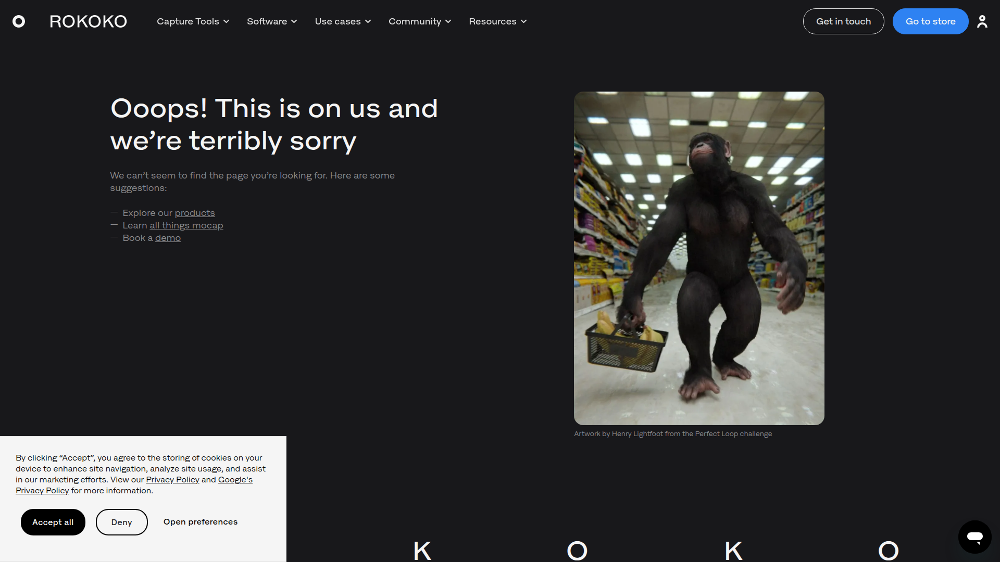

> 調研日期：2026-06-19
> 官網：https://www.rokoko.com/products/vision
> 入口：https://vision.rokoko.com
> 定價：https://www.rokoko.com/pricing
▲ Rokoko Vision + Blender Tutorial
Rokoko Vision 是丹麥動捕公司 Rokoko 推出的 AI 影片轉動作捕捉工具，作為其硬體動捕套件（Smartsuit Pro II、Smartgloves）的低門檻入門版。透過瀏覽器運行，支援單/雙鏡頭模式。
與硬體的區別：Vision 是 AI 軟體方案（後處理型），不需任何穿戴硬體。硬體套件則提供即時、更高精度、含手指/臉部的完整捕捉。
解決的問題：

▲ Rokoko Vision 官方首頁 — AI 動作捕捉
| 功能 | 支援 | 備註 |
|---|---|---|
| 全身追蹤 | ✅ | 核心功能 |
| 臉部追蹤 | ❌ | 需另購 Face Capture iOS app |
| 手指追蹤 | ❌ | 需 Smartgloves 硬體 |
| 單鏡頭 | ✅ | Webcam 即可 |
| 雙鏡頭 | ✅ | Plus 方案以上，改善深度感知 |
| 多人追蹤 | ❌ | 僅單人（硬體可 5 人） |
| Foot Locking | ✅ | 濾鏡減少滑步 |
| Locomotion Filter | ✅ | 步行修正 |
| Loop Segments | ✅ | Basic 以上 |
| Smoothing | ✅ | Basic 以上 |
| 格式 | 方案要求 |
|---|---|
| FBX | 所有方案（含免費） |
| BVH | Basic 以上（$10/月） |
| CSV | Pro 以上 |
| 資源 | 連結 |
|---|---|
| Vision 產品頁 | https://www.rokoko.com/products/vision |
| Vision 入口 | https://vision.rokoko.com |
| Vision 文件中心 | https://support.rokoko.com/hc/en-us/categories/9922315702161-Rokoko-Vision |
| Quick Start Guide | https://docs.rokoko.com/rkk-vision-documentation/quick-start-guide |
| YouTube 頻道 | https://www.youtube.com/@RokokoMotion |
| Blender Plugin 文件 | https://support.rokoko.com/hc/en-us/sections/4410471640465-Blender-Plugin |
| IMU vs AI Vision 比較 | https://www.rokoko.com/insights/imu-vs-ai-vision |
| Discord | https://discord.gg/AfCJBBQqRm |
| 方案 | 年付月費 | 月付月費 | 功能 |
|---|---|---|---|
| Starter（免費） | $0 | $0 | 單/雙鏡頭，限 15 秒，FBX 匯出 |
| Basic | $10/月 | $12/月 | 無限長度、BVH 匯出、smoothing |
| Plus | $20/月 | $28/月 | Live stream 到第三方、自訂骨架 |
| Pro | $50/月 | $70/月 | 全功能 + Face Capture + CSV |
| Enterprise | $100+/月 | $150+/月 | 客製方案 |
重點：Basic $10/月（年付）即可 BVH 匯出 + 無限時長！
| 面向 | 評估 |
|---|---|
| 格式相容 | ✅ BVH 直出 |
| 價格 | ✅ $10/月極便宜 |
| Blender Addon | ✅ 直接整合 retargeting |
| 適合場景 | 快速參考影片轉動捕，但精度/功能不如 Viggle |
| 量產化 | ❌ 無 API，手動操作為主 |
Rokoko Vision 定位：
「最便宜的 BVH 入門方案 + 完善生態系整合」
適合：
• 已有 Rokoko Studio 工作流的團隊
• 低預算快速動捕參考
• 需要 Rokoko Blender addon retarget 功能的場景
不適合：
• 大規模量產（無 API）
• 精細動作（無手指/臉部）
• 複雜動作（精度有限）
| 項目 | 評分 (1-5) |
|---|---|
| 與我們目標的相關性 | ⭐⭐⭐ |
| 技術成熟度 | ⭐⭐⭐⭐ |
| 易用性 | ⭐⭐⭐⭐ |
| 性價比 | ⭐⭐⭐⭐ |
| Pipeline 整合潛力 | ⭐⭐⭐ |
| 量產化適合度 | ⭐⭐ |
推薦等級：🟡 備選方案 — 作為最便宜的 BVH 方案（$10/月），Rokoko 生態系整合好。但在「量產」需求上不如 Viggle（有 API、更便宜）。適合補充用。